The TikZ and PGF Packages
Manual for version 3.1.10
Libraries
60 Mindmap Drawing Library¶
-
TikZ Library mindmap ¶
\usetikzlibrary{mindmap} %
LaTeX
and plain
TeX
\usetikzlibrary[mindmap] %
ConTeXt
This packages provides styles for drawing mindmap diagrams.
60.1 Overview¶
This library is intended to make the creation of mindmaps or concept maps easier. A mindmap is a graphical representation of a concept together with related concepts and annotations. Mindmaps are, essentially, trees, possibly with a few extra edges added, but they are usually drawn in a special way: The root concept is placed in the middle of the page and is drawn as a huge circle, ellipse, or cloud. The related concepts then “leave” this root concept via branch-like tendrils.
The mindmap library of TikZ produces mindmaps that look a bit different from the standard mindmaps: While the big root concept is still a circle, related concepts are also depicted as (smaller) circles. The related concepts are linked to the root concept via organic-looking connections. The overall effect is visually rather pleasing, but readers may not immediately think of a mindmap when they see a picture created with this library.
Although it is not strictly necessary, you will usually create mindmaps using TikZ’s tree mechanism and some of the styles and macros of the package work best when used inside trees. However, it is still possible and sometimes necessary to treat parts of a mindmap as a graph with arbitrary edges and this is also possible.
60.2 The Mindmap Style¶
Every mindmap should be put in a scope or a picture where the mindmap style is used. This style installs some internal settings.
-
/tikz/mindmap(style, no value) ¶
Use this style with all pictures or at least scopes that contain a mindmap. It installs a whole bunch of settings that are useful for drawing mindmaps.
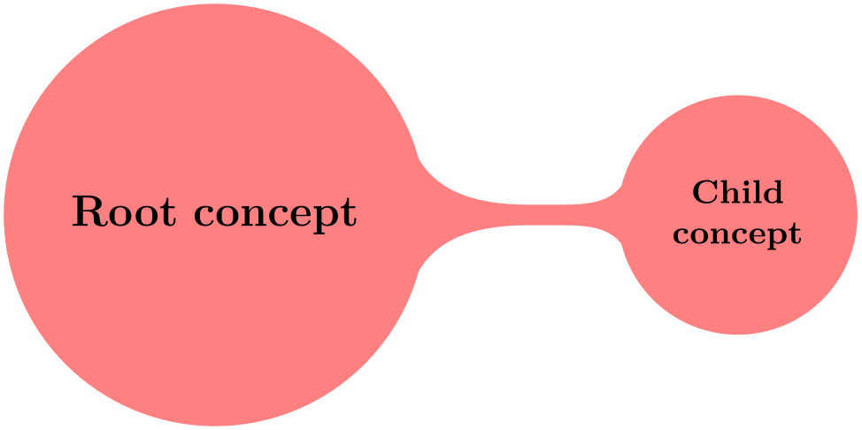
The sizes of concepts are predefined in such a way that a medium-size mindmap will fit on an A4 page (more or less).
Remark: Note that mindmap redefines font sizes and sibling angle depending on the current concept level (i.e. inside of level 1 concept, level 2 concept etc.). Thus, if you need to redefine these variables, use
level 1 concept/.append style={font=\small}
or
level 2 concept/.append style={sibling distance=90}
after the mindmap style.
-
/tikz/small mindmap(style, no value) ¶
This style includes the mindmap style, but additionally changes the default size of concepts, fonts and distances so that a medium-sized mindmap will fit on an A5 page (A5 pages are half as large as A4 pages). Mindmaps with small mindmap will also fit onto a standard frame of the beamer package.
-
/tikz/large mindmap(style, no value) ¶
This style includes the mindmap style, but additionally changes the default size of concepts, fonts and distances so that a medium-sized mindmap will fit on an A3 page (A3 pages are twice as large as A4 pages).
-
/tikz/huge mindmap(style, no value) ¶
This style causes concepts to be even bigger and it is best used with A2 paper and above.
60.3 Concepts Nodes¶
The basic entities of mindmaps are called concepts in TikZ. A concept is a node of style concept and it must be circular for some of the connection macros to work.
60.3.1 Isolated Concepts¶
The following styles influence how isolated concepts are rendered:
-
/tikz/concept(style, no value) ¶
-
/tikz/every concept(style, no value) ¶
-
/tikz/concept color=⟨color⟩(no default) ¶
This style should be used with all nodes that are concepts, although some styles like extra concept install this style automatically.
Basically, this style makes the concept node circular and installs a uniform color called concept color, see below. Additionally, the style every concept is called.
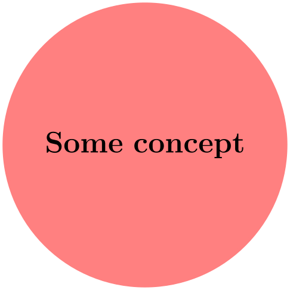
In order to change the appearance of concept nodes, you should change this style. Note, however, that the color of a concept should be uniform for some of the connection bar stuff to work, so you should not change the color or the draw/fill state of concepts using this option. It is mostly useful for changing the text color and font.
This option tells TikZ which color should be used for filling and stroking concepts. The difference between this option and just setting every concept to the desired color is that this option allows TikZ to keep track of the colors used for concepts. This is important when you change the color between two connected concepts. In this case, TikZ can automatically create a shading that provides a smooth transition between the old and the new concept color; we will come back to this in the next section.
-
/tikz/extra concept(style, no value) ¶
-
/tikz/every extra concept(style, no value) ¶
This style is intended for concepts that are not part of the “mindmap tree”, but stand beside it. Typically, they will have a subdued color or be smaller. In order to have these concepts appear in a uniform way and in order to indicate in the code that these concepts are additional, you can use this style.
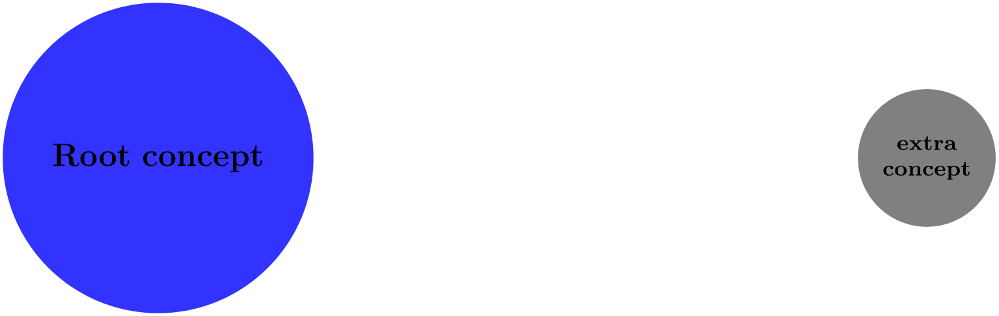
\usetikzlibrary {mindmap}
\begin{tikzpicture}[mindmap,concept color=blue!80]
\node [concept] {Root
concept};
\node [extra concept] at
(10,0) {extra
concept};
\end{tikzpicture}
Change this style to change the appearance of extra concepts.
60.3.2 Concepts in Trees¶
As pointed out earlier, TikZ assumes that your mindmap is built using the child facilities of TikZ. There are numerous options that influence how concepts are rendered at the different levels of a tree.
-
/tikz/root concept(style, no value) ¶
This style is used for the roots of mindmap trees. By adding something to this, you can change how the root of a mindmap will be rendered.
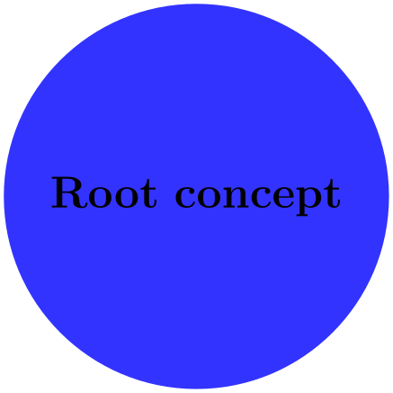
\usetikzlibrary {mindmap}
\tikz
[root concept/.append style={concept color=blue!80,minimum size=3.5cm},
mindmap]
\node [concept] {Root
concept};
Note that styles like large mindmap redefine these styles, so you should add something to this style only inside the picture.
-
/tikz/level 1 concept(style, no value) ¶
The mindmap style adds this style to the level 1 style. This means that the first level children of a mindmap tree will use this style.
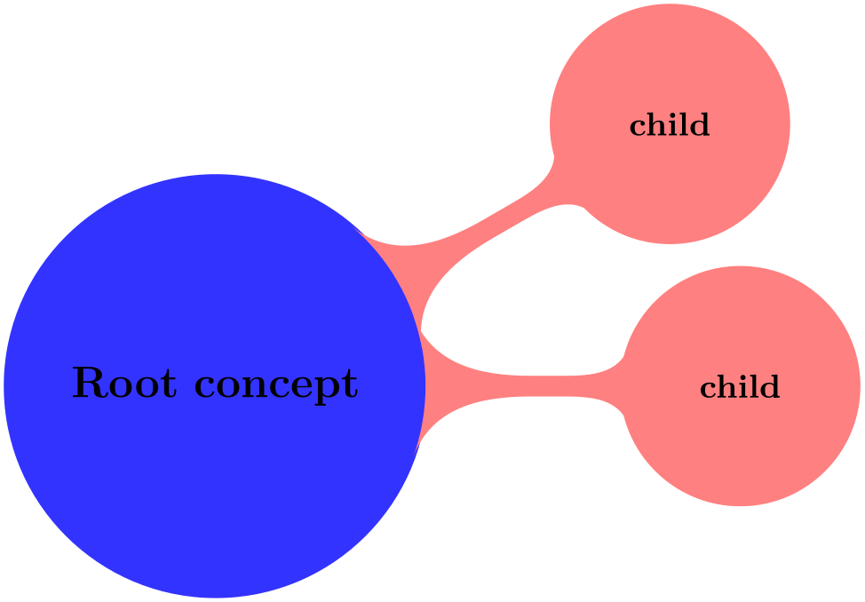
\usetikzlibrary {mindmap}
\tikz
[root concept/.append style={concept color=blue!80},
level 1 concept/.append style={concept color=red!50},
mindmap]
\node [concept] {Root
concept}
child[grow=30] {node[concept] {child}}
child[grow=0 ] {node[concept] {child}};
-
/tikz/level 2 concept(style, no value) ¶
Works like level 1 concept, only for second level children.
-
/tikz/level 3 concept(style, no value) ¶
Works like level 1 concept.
-
/tikz/level 4 concept(style, no value) ¶
Works like level 1 concept. Note that there are no fifth and higher level styles, you need to modify level 5 directly in such cases.
-
/tikz/concept color=⟨color⟩(no default)
We saw already that this option is used to change the color of concepts. We now have a look at its effect when used on child nodes of a concept. Normally, this option simply changes the color of the children. However, when the option is given as an option to the child operation (and not to the node operation and also not as an option to all children via the level 1 style), TikZ will smoothly change the concept color from the parent’s color to the color of the child concept.
Here is an example:
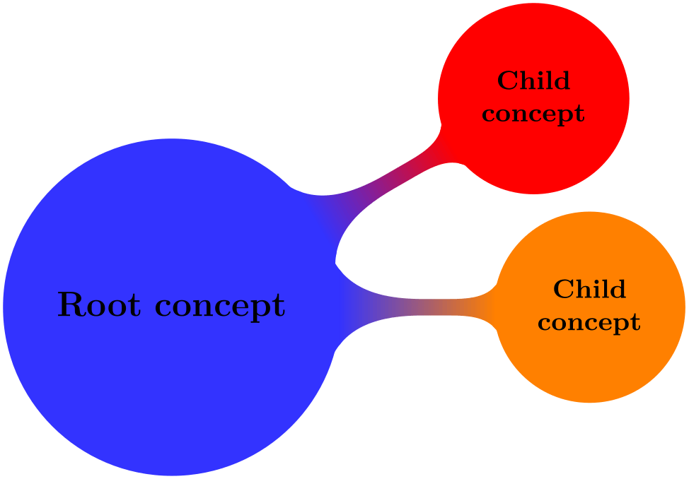
In order to have a concept color which changes with the hierarchy level, a tiny bit of magic is needed:
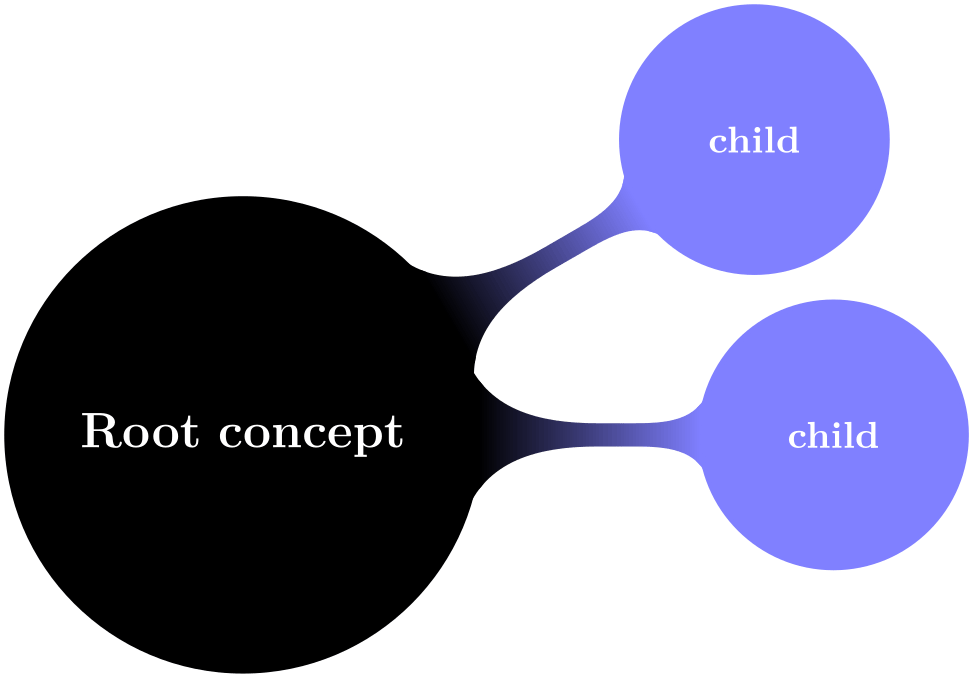
\usetikzlibrary {mindmap}
\tikz[mindmap,text=white,
root concept/.style={concept color=blue},
level 1 concept/.append style=
{every child/.style={concept color=blue!50}}]
\node [concept] {Root
concept}
child[grow=30] {node[concept] {child}}
child[grow=0 ] {node[concept] {child}};
60.4 Connecting Concepts¶
60.4.1 Simple Connections¶
The easiest way to connect two concepts is to draw a line between them. In order to give such lines a consistent appearance, it is recommendable to use the following style when drawing such lines:
-
/tikz/concept connection(style, no value) ¶
This style can be used for lines between two concepts. Feel free to redefine this style.
A problem arises when you need to connect concepts after the main mindmap has been drawn. In this case you will want the connection lines to lie behind the main mindmap. However, you can draw the lines only after the coordinates of the concepts have been determined. In this case you should place the connecting lines on a background layer as in the following example:
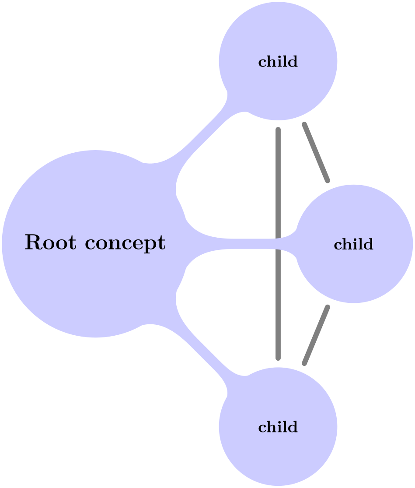
\usetikzlibrary {backgrounds,mindmap}
\begin{tikzpicture}
[root concept/.append style={concept color=blue!20,minimum size=2cm},
level 1 concept/.append style={sibling angle=45},
mindmap]
\node [concept] {Root
concept}
[clockwise from=45]
child
{ node[concept] (c1) {child}}
child
{ node[concept] (c2) {child}}
child
{ node[concept] (c3) {child}};
\begin{pgfonlayer}{background}
\draw [concept connection] (c1) edge
(c2)
edge
(c3)
(c2) edge
(c3);
\end{pgfonlayer}
\end{tikzpicture}
60.4.2 The Circle Connection Bar Decoration¶
Instead of a simple line between two concepts, you can also add a bar between the two nodes that has slightly organic ends. These bars are also used by default as the edges from parents in the mindmap tree.
For the drawing of the bars a special decoration is used, which is defined in the mindmap library:
-
Decoration circle connection bar
-
• start radius
-
• end radius
-
• amplitude
-
• angle
This decoration can be used to connect two circles. The start of the to-be-decorated path should lie on the border of the first circle, the end should lie on the border of the second circle. The following two decoration keys should be initialized with the sizes of the circles:
Furthermore, the following two decoration keys influence the decoration:
The decoration turns a straight line into a path that starts on the border of the first circle at the specified angle relative to the line connecting the centers of the circles. The path then changes into a rectangle whose thickness is given by the amplitude. Finally, the path ends with the same angles on the second circle.
Here is an example that should make this clearer:
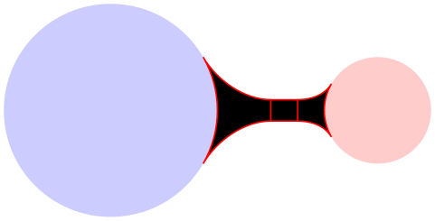
\usetikzlibrary {mindmap}
\begin{tikzpicture}
[decoration={start radius=1cm,end
radius=.5cm,amplitude=2mm,angle=30}]
\fill[blue!20] (0,0) circle
(1cm);
\fill[red!20] (2.5,0) circle
(.5cm);
\filldraw [draw=red,fill=black,
decorate,decoration=circle connection
bar] (1,0) --
(2,0);
\end{tikzpicture}
As can be seen, the decorated path consists of three parts and is not really useful for drawing. However, if you fill the decorated path only, and if you use the same color as for the circles, the result is better.
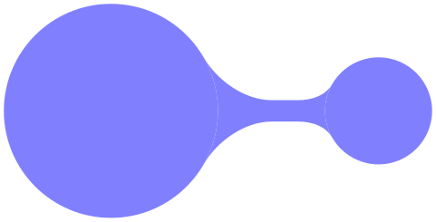
\usetikzlibrary {mindmap}
\begin{tikzpicture}
[blue!50,decoration={start radius=1cm,
end
radius=.5cm,amplitude=2mm,angle=30}]
\fill (0,0) circle
(1cm);
\fill (2.5,0) circle
(.5cm);
\fill [decorate,decoration=circle connection
bar] (1,0) --
(2,0);
\end{tikzpicture}
In the above example you may notice the small white line between the circles and the decorated path. This is due to rounding errors. Unfortunately, for larger distances, the errors can accumulate quite strongly, especially since TikZ and TeX are not very good at computing square roots. For this reason, it is a good idea to make the circles slightly larger to cover up such problems. When using nodes of shape circle, you can just add the draw option with a line width of one or two points (for very large distances you may need line width up to 4pt).
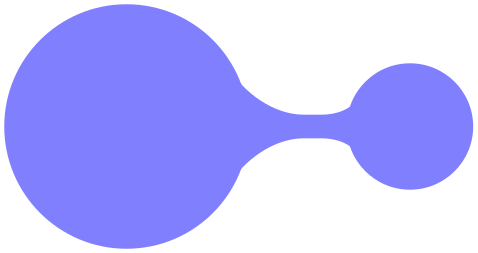
\usetikzlibrary {mindmap}
\begin{tikzpicture}
[blue!50,decoration={start radius=1cm,
end
radius=.5cm,amplitude=2mm,angle=30}]
\fill (0,0) circle
(1cm+1pt);
\fill (2.4,0) circle
(.5cm+1pt);
\fill [decorate,decoration=circle connection
bar] (1,0) --
(1.9,0);
\end{tikzpicture}
60.4.3 The Circle Connection Bar To-Path¶
The circle connection bar decoration is a bit complicated to use. Especially specifying the radii is quite bothersome (the amplitude and the angle can be set once and for all). For this reason, the mindmap library defines a special to-path that performs the necessary computations for you.
-
/tikz/circle connection bar(style, no value) ¶
-
/tikz/every circle connection bar(style, no value) ¶
This style installs a rather involved to-path. Unlike normal to-paths, this path requires that the start and the target of the to-path are named nodes of shape circle – if this is not the case, this path will produce errors.
Assuming that the start and the target are circles, the to-path will first compute the radii of these circles (by measuring the distance from the center anchor to some anchor on the border) and will set the start circle keys accordingly. Next, the fill option is set to the concept color while draw=none is set. The decoration is set to circle connection bar. Finally, the following style is included:
Redefine this style to change the appearance of circle connection bar to-paths.
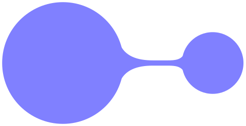
\usetikzlibrary {mindmap}
\begin{tikzpicture}[concept color=blue!50,blue!50,outer sep=0pt]
\node (n1) at
(0,0) [circle,minimum size=2cm,fill,draw,thick] {};
\node (n2) at
(2.5,0) [circle,minimum size=1cm,fill,draw,thick] {};
\path (n1) to[circle connection bar] (n2);
\end{tikzpicture}
Note that it is not a good idea to have more than one to operation together with the option circle connection bar in a single \path. Use the edge operation, instead, for creating multiple connections and this operation creates a new scope for each edge.
In a mindmap we sometimes want colors to change from one concept color to another. Then, the connection bar should, ideally, consist of a smooth transition between these two colors. Getting this right using shadings is a bit tricky if you try this “by hand”, so the mindmap library provides a special option for facilitating this procedure.
-
/tikz/circle connection bar switch color=from (⟨first color⟩) to (⟨second color⟩)(no default) ¶
This style works similarly to the circle connection bar. The only difference is that instead of filling the path with a single color a shading is used.
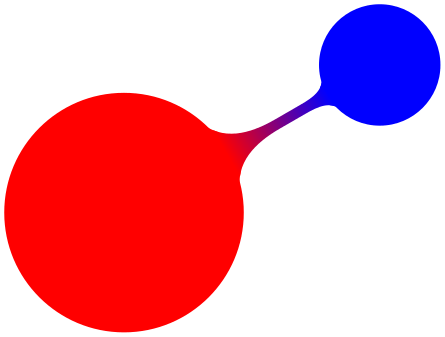
\usetikzlibrary {mindmap}
\begin{tikzpicture}[outer sep=0pt]
\node (n1) at
(0,0) [circle,minimum size=2cm,fill,draw,thick,red] {};
\node (n2) at
(30:2.5) [circle,minimum size=1cm,fill,draw,thick,blue] {};
\path (n1) to[circle connection bar switch color=from
(red) to
(blue)] (n2);
\end{tikzpicture}
60.4.4 Tree Edges¶
Most of the time, concepts in a mindmap are connected automatically when the mindmap is built as a tree. The reason is that the mindmap installs a circle connection bar path as the edge from parent path. Also, the mindmap option takes care of things like setting the correct draw and outer sep settings and some other stuff.
In detail, the mindmap option sets the edge from parent path to a path that uses the to-path circle connection bar to connect the parent node and the child node. The concept color option (locally) changes this by using circle connection bar switch color instead with the from-color set to the old (parent’s) concept color and the to-color set to the new (child’s) concept color. This means that when you provide the concept color option to a child command, the color will change from the parent’s concept color to the specified color.
Let us now build a tree that way. Please note that we pass the concept color to the respective child and not to a node under it.
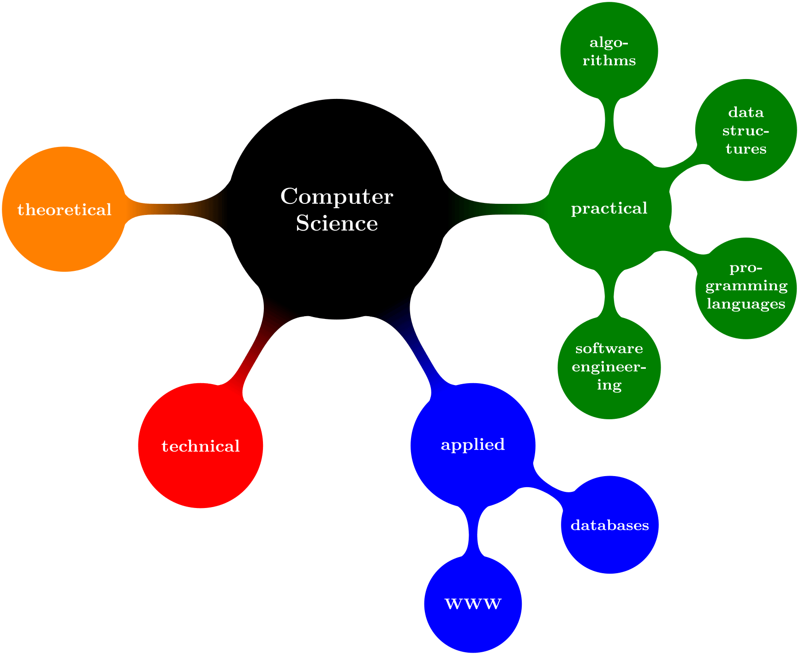
\usetikzlibrary {mindmap}
\begin{tikzpicture}
\path[mindmap,concept color=black,text=white]
node[concept] {Computer
Science}
[clockwise from=0]
% note that `sibling angle' can only be defined in
% `level 1 concept/.append style={}'
child[concept color=green!50!black] {
node[concept] {practical}
[clockwise from=90]
child
{ node[concept] {algorithms} }
child
{ node[concept] {data
structures} }
child
{ node[concept] {pro\-gramming languages} }
child
{ node[concept] {software
engineer\-ing} }
}
% note that the `concept color' is passed to the
`child'(!)
child[concept color=blue] {
node[concept] {applied}
[clockwise from=-30]
child
{ node[concept] {databases} }
child
{ node[concept] {WWW} }
}
child[concept color=red] { node[concept] {technical} }
child[concept color=orange] { node[concept] {theoretical} };
\end{tikzpicture}
60.5 Adding Annotations¶
An annotation is some text outside a mindmap that, unlike an extra concept, simply explains something in the mindmap. The following style is mainly intended to help readers of the code see that a node in an annotation node.
-
/tikz/annotation(style, no value) ¶
-
/tikz/every annotation(style, no value) ¶
This style indicates that a node is an annotation node. It includes the style every annotation, which allows you to change this style in a convenient fashion.
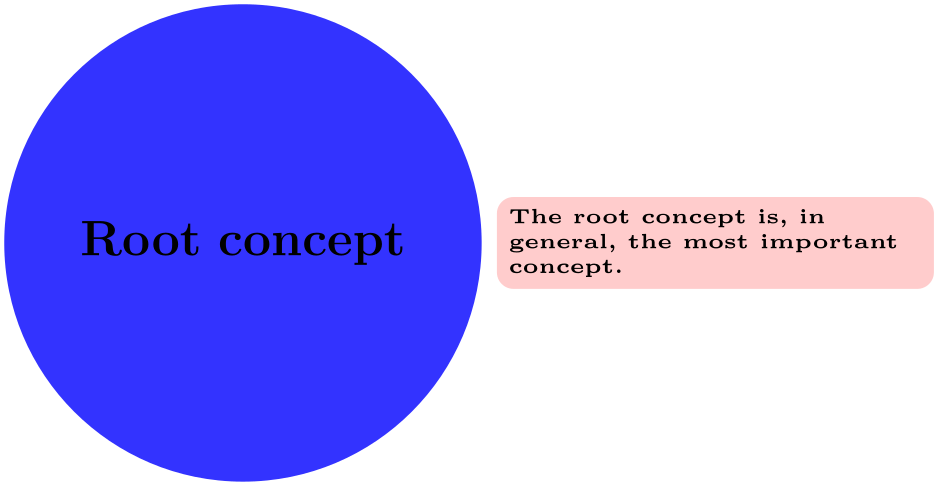
\usetikzlibrary {mindmap}
\begin{tikzpicture}
[mindmap,concept color=blue!80,
every annotation/.style={fill=red!20}]
\node [concept] (root) {Root
concept};
\node [annotation,right] at
(root.east)
{The
root
concept
is, in
general, the
most
important
concept.};
\end{tikzpicture}
This style is included by annotation.